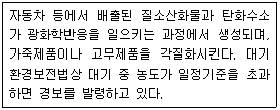
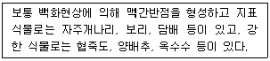
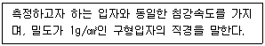
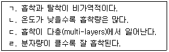
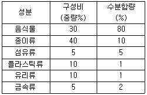

환경기능사 (2011-02-13 기출문제)
1과목: 대기오염방지
1. <보기>에서 설명하는 대기오염물질은?

- VOC
- O3
- CO2
- CFC
(정답률: 77%)

2. 유해가스의 처리에 사용되는 충진탑의 내부에 채워 넣는 충진물이 갖추어야 할 조건으로 옳지 않은 것은?
- 공극율이 커야 한다.
- 단위용적에 대하여 표면적이 작아야 한다.
- 마찰저항이 작아야 한다.
- 충진밀도가 커야 한다.
(정답률: 73%)
3. 연소조절에 의한 NOx 발생의 억제방법으로 옳지 않은 것은?
- 2단 연소를 실시한다.
- 과잉공기량을 삭감시켜 운전한다.
- 배기가스를 재순환시킨다.
- 부분적인 고온영역을 만들어 연소효율을 높인다.
(정답률: 68%)
4. 다음 중 냉장고의 냉매와 스프레이용의 분사제 등 CFC 화학물질이 대기에 미치는 가장 주된 오염현상은?
- 산성비
- 오존층 파괴
- 도플러 효과
- Rayleigh 현상
(정답률: 80%)
5. 다음 중 물에 대한 용해도가 가장 큰 기체는? (단. 온도는 30℃ 기준이며, 기타 조건은 동일하다)
- SO2
- CO2
- HCl
- H2
(정답률: 70%)
6. CH490%, CO26%, O24%인 기체연료 1Sm3에 대하여 10Sm3의 공기를 사용하여 연소하였다. 이 때 공기비는?
- 1.19
- 1.49
- 1.79
- 2.09
(정답률: 42%)
7. 다음 중 1차 및 2차 오염물질에 모두 해당될 수 있는 것은?
- 이산화탄소
- 납
- 알데하이드
- 일산화탄소
(정답률: 66%)
8. <보기>에 해당하는 대기오염물질은?

- 황산화물
- 탄화수소
- 일산화탄소
- 질소산화물
(정답률: 85%)
9. 집진장치의 입구 더스트 농도가 2.8g/Sm3이고 출구 더스트 농도가 0.1g/Sm3일 때 집진율(%)은?
- 86.9
- 94.2
- 96.4
- 98.8
(정답률: 58%)
10. 싸이클론의 집진효율 향상조건으로 옳지 않은 것은?
- 일정 한계에서 입구 가스의 속도를 빠르게 한다.
- 배기관의 지름을 크게 한다,
- 고동도일 때는 병렬연결을 한다.
- 블로우 다운(blow down)효과를 이용한다.
(정답률: 54%)
11. 유해가스 측정을 위한 시료 채취장치가 순서대로 바르게 구성된 것은?
- 굴뚝 - 시료채취관 - 여과재 - 흡수병 - 건조제 - 흡인펌프 - 가스미터
- 굴뚝 - 건조제 - 흡인펌프 - 가스미터 - 시료채취관 - 여과재 - 흡수병
- 굴뚝 - 시료채취관 - 가스미터 - 여과재 - 흡수병 - 건조재 - 흡인펌프
- 굴뚝 - 가스미터 - 흡인펌프 - 건조제 - 흡수병 - 시료채취관 - 여과재
(정답률: 71%)
12. 여과식 집진장치에서 지름이 0.3m 길이가 3m인 원통형 여과포 18개를 사용하여 유량이 30m3/min인 가스를 처리할 경우에 여과포의표면 여과속도는 얼마인가?
- 0.39m/min
- 0.59m/min
- 0.79m/min
- 0.99m/min
(정답률: 50%)
13. 다음 중 유체의 흐름을 판별하는 레이놀드 수를 나타낸 식은?
- 점성력/관성력
- 관성력/점성력
- 탄성력/마찰력
- 마찰력/탄성력
(정답률: 73%)
14. 아황산가스의 대기환경 중 기준치가 0.06ppm 이라면 몇㎍/m3인가? (단, 모두 표준상태로 가정한다.)
- 85.7
- 99.7
- 135.7
- 171.4
(정답률: 37%)
15. <보기>와 같이 정의되는 입자의 직경은?

- 휘렛 직경(Feret diameter)
- 마틴 직경(Martin diameter)
- 공기역학 직경(Aerodynamic diameter)
- 스토크스 직경(Stokes diameter)
(정답률: 62%)
2과목: 폐수처리
16. 다음 중 살수여상법으로 폐수를 처리할 때 유지관리상 주의할 점이 아닌 것은?
- 슬러지의 팽화
- 여상의 폐쇄
- 생물막의 탈락
- 파리의 발생
(정답률: 82%)
17. Cr⁶⁺ 함유 폐수 처리법으로 가장 적합한 것은?
- 환원→침전→중화
- 환원→중화→침전
- 중화→침전→환원
- 중화→환원→침전
(정답률: 65%)
18. 300mL BOD병에 분석대상 시료를 0.2% 넣고, 나머지는 희석수로 채운 다음 최소의 DO농도를 측정한 결과 6.8mg/L이었다며, 5일간 배양 후의 DO농도는 2.6mg/L 이었다. 이 시료의 BOD5(mg/L)는?
- 8200
- 6300
- 4800
- 2100
(정답률: 34%)
19. 화학적 산소 요구량(COD)에 대한 설명 중 옳지 않은 것은?(시험범위 개정으로 출제되지 않는 문제입니다. 기존 정답은 4번입니다.)
- 미생물에 의해 분해되지 않는 물질도 측정이 가능하다.
- 염소이온의 방해는 황산은을 첨가함으로서 감소시킬 수 있다.
- BOD 시험치보다 빨리 구할 수 있으므로 폐수처리시설 운영 시 유용하게 사용가능하다.
- 우리나라는 알카리성 100℃에서 K2Cr2O4를 이용하여 측정하도록 규정하고 있다.
(정답률: 70%)
20. 염소는 폐수 내의 질소화합물과 결합하여 무엇을 형성하는가?
- 유리염소
- 클로라민
- 액체염소
- 암모니아
(정답률: 78%)
21. 에탄올의 농도가 250mg/L인 폐수의 이론적인 화학적 산소 요구량은?
- 397.3mg/L
- 415.6mg/L
- 457.5mg/L
- 521.7mg/L
(정답률: 34%)
22. 다음 중 용존산소에 영향을 주는 인자에 대한 설명으로 옳지 않은 것은?
- 물의 온도가 높을수록 용존산소량은 감소한다.
- 불순물의 농도가 높을수록 용존산소량은 감소한다.
- 물의 흐름이 난류일 때 산소의 용해도가 낮다.
- 현재 물 속에 녹아 있는 용존산소량이 적을수록 용해속도가 증가한다.
(정답률: 58%)
23. 다음 중 비점오염원에 해당하는 것은?
- 농경지 배수
- 폐수처리장 방류수
- 축산폐수
- 공장의 산업폐수
(정답률: 87%)
24. 활성슬러지법은 여러 가지 변법이 개발되어 왔으며, 각 방법은 특별한 운전이나 제거효율을 달성하기 위하여 발전되었다. 다음 중 활성슬러지법의 변법으로 볼 수 없는 것은?
- 다단 포기법
- 접촉 안정법
- 장기 포기법
- 오존 안정법
(정답률: 70%)
25. 여과지의 운전 중 발생하는 주요 문제점으로 가장 거리가 먼 것은?
- 진흙 덩어리의 축적
- 공기결합
- 여재층의 수축
- 슬러지벌킹 발생
(정답률: 73%)
26. 234ppm NaCl 용액의 농도는 몇 M 인가? (단, 원자량은 Na:23, Cl:35.5 이며, 용액의 비준은 1.0)
- 0.002
- 0.004
- 0.025
- 0.⑤0
(정답률: 56%)
27. MLSS농도가 2500mg/L 인 혼압액을 1L 메스실린더에 취하여 30분 후 슬러지 부피를 측정한 결과 350mL 이었다. SVI는?
- 80
- 100
- 120
- 140
(정답률: 39%)
28. 폭 2m, 길이 15m 인 침사지에 100㎝ 수심으로 폐수가 유입할 때 체류시간이 50초라면 유량은?
- 2000m3/h
- 2160m3/h
- 2280m3/h
- 2460m3/h
(정답률: 51%)
29. 질소의 고도처리 방법 중 폐수의 pH를 11 이상으로 높여 기체 상태의 암모니아로 전환시킨 다음, 공기를 불어넣어 제거하는 방법은?
- 탈기
- 막분리법
- 세포합성
- 이온교환
(정답률: 72%)
30. 200m3의 포기조에 BOD 370mg/L인 폐수가 1250m3/day의 유량으로 유입되고 있다. 이포기조의 BOD 용적부하는?
- 1.78kg/m3∙day
- 2.31kg/m3∙day
- 2.98kg/m3∙day
- 3.12kg/m3∙day
(정답률: 45%)
31. 펜턴(Fenton) 산화반응에 대한 설명으로 옳은 것은?
- 황화수소의 난분해성 유기물질 산화
- 과산화수소의 난분해성 유기물질 산화
- 오존의 난분해성 유기물질 산화
- 아질산의 난분해성 유기물질 산화
(정답률: 63%)
32. 다음 중 가름 살균방법에 비해 염소살균을 더 선호하는 이유로 가장 적합한 것은?
- 잔류염소의 효과
- 부반응의 억제
- 특정온도에서의 반응성 증가
- 인체에 대한 면역성 증가
(정답률: 83%)
33. 펄프 공장에서 배출되는 폐수의 BOD5 값이 260mg/L이고 탈산소계수 [k,(상용대수 베이스)]가 0.2/day 라면 최종BOD(mg/L)는?
- 265
- 289
- 312
- 352
(정답률: 48%)
34. 총인을 아스코르브산 환원법에 의해 흡광도 측적을 할 때 880nm에서 측정이 붕가능 할 경우 즉정파장 값으로 옳은 것은?(시험 범위 개정으로 출제되지 않는 문제입니다. 기존 정답은 3번입니다.)
- 220nm
- 568nm
- 710nm
- 1065nm
(정답률: 65%)
35. 다음 보기 중 물리적 흡착의 특징을 모두 고른 것은?

- ㄱ, ㄴ
- ㄴ, ㄹ
- ㄱ, ㄴ, ㄷ
- ㄴ, ㄷ, ㄹ,
(정답률: 68%)
3과목: 폐기물처리
36. 폐기물의 발생원에서 처리장까지의 거리가 먼 경우 중간 지점에 설치하여 운반비용을 절감시키는 역할을 하는 것은?
- 적환장
- 소화조
- 살포장
- 매립지
(정답률: 83%)
37. 쓰레기 1톤을 수거하는데 수거인부 1인이 소요하는 총 시간을 뜻하는 용어는?
- MHS
- MHT
- MTS
- MTH
(정답률: 82%)
38. 수준함량이 20%인 쓰레기를 건조시켜 5%가 되도록 하려면 쓰레기 1톤당 증발시켜야할 수분의 양은? (단, 쓰레기의 비중은 1.0 으로 동일)
- 126.1kg
- 132.3kg
- 157.9kg
- 184.7kg
(정답률: 49%)
39. 폐기물을 압축 시켰을 때 부피 감소율이 75%이었다면 압축비는?
- 1.5
- 2.0
- 2.5
- 4.0
(정답률: 51%)
40. 분뇨의 특성으로 옳지 않은 것은?
- 분뇨는 연중 배출량 및 특성변화 없이 일정하다.
- 분뇨는 대량의 유기물을 함유하고 점도가 높다.
- 분뇨에 포함되어 있는 질소화합물은 소화시 소화조내의 pH 강하를 막아준다.
- 분뇨는 도시하수에 비해 고형물 함유도가 높다.
(정답률: 66%)
41. 다음 중 덮개시설에 관한 설명으로 옳지 않은 것은?
- 당일복토는 매립 작업 종료 후에 매일 실시한다.
- 셀(cell)방식의 매립에서는 상부면의 노출기간이 7일 이상이므로 당일복토는 주로 사면부에 두께 15㎝ 이상으로 시실한다.
- 당일복토재로 사질토를 사용하면 압축작업이 쉽고 통기성은 좋으나 악취발산의 가능성이 커진다.
- 중간복토의 두께는 15㎝ 이상으로 하고, 우수배제를 위해 중간복토층은 최소 0.5%이상의 경사를 둔다.
(정답률: 58%)
42. 다음 중 슬러지 처리의 일반적인 계통도로 옳은 것은?
- 농축 - 안정화 - 개량 - 탈수 - 소각 - 최종처분
- 안정화 - 탈수 - 농축 - 개량 - 소각 - 최종처분
- 안정화 - 농축 - 탈수 - 소각 - 개량 - 최종처분
- 농축 - 탈수 - 개량 - 안정화 - 소각 - 최종처분
(정답률: 72%)
43. A도시 쓰레기를 분류하여 성분별로 수분 함량을 측정한 결과가 아래와 같다. 이 폐기물의 평균 수분함량은?

- 3.13%
- 13.33%
- 28.55%
- 41.22%
(정답률: 61%)
44. 중량비로 수소가 15%, 수분이 1%인 연료의 고위 발열량이 9500kcal/kg 일 때 저위 발열량은?
- 8684kcal/kg
- 8968kcal/kg
- 9271kcal/kg
- 9554kcal/kg
(정답률: 47%)
45. 매립지의 복토기능으로 거리가 먼 것은?
- 화재 발생 방지
- 우수의 이동 및 침투방지로 침출수량 최소화
- 유해가스 이동성 향상
- 매립지의 압축효과에 따른 부등침하의 최소화
(정답률: 71%)
46. 다음 중 연료형태에 따른 연소의 종류에 해당하지 않은 것은?
- 분해연소
- 조연연소
- 증발연소
- 표면연소
(정답률: 74%)
47. 무기성 고형화에 대한 설명으로 가장 거리가 먼 것은?
- 다양한 산업폐기물에 적용이 가능하다
- 수밀성과 수용성이 높아 다양한 적용이 가능하나 처리 비용은 고가이다.
- 고형화 재료에 따라 고화체의 체적 증가가 다양하다.
- 상온 및 상압하에서 처리가 가능하다.
(정답률: 56%)
48. 폐기물처리에서 “파쇄(shredding)"의 목적과 거리가 먼 것은?
- 부식효과 억제
- 겉보기 비중의 증가
- 특정 성분의 분리
- 고체물질간의 균일혼합효과
(정답률: 68%)
49. 쓰레기의 발생량을 산정하는 방법 중 일정기간 동안 특정지역의 쓰레기 수거차량의 댓수를 조사하여 이 값에 밀도를 곱하여 중량으로 환산하는 방법은?
- 물질수지법
- 직접 계근법
- 적재차량 계수분석법
- 적환법
(정답률: 84%)
50. 다음 중 폐기물의 중간 처리가 아닌 것은?
- 압축
- 파쇄
- 선별
- 매립
(정답률: 81%)
51. 다음 중 매립지에서 유기물이 혐기성 분해될 때 가장 늦게 일어나는 단계는?
- 가수분해 단계
- 알콜발효 단계
- 메탄 생성 단계
- 산 생성 단계
(정답률: 78%)
52. 슬러지나 분뇨의 탈수 가능성을 나타내는 것은?
- 균등계수
- 알칼리도
- 여과비저항
- 유효경
(정답률: 61%)
53. 차수시설에 관한 설명으로 옳지 않은 것은?
- 점토의 경우 급경사면을 포함한 어떤 지반에도 효과적으로 적용가능하고, 부등침하가 발생하지 않는다.
- 점토의 경우 양이온 교환능력 등에 의한 오염물질의 정화기능도 가지고 있을 뿐 아니라 벤토나이트 등을 첨가하면 차수성을 향상시킬 수 있다.
- 연직차수막은 매립지 바닥에 수평방향으로 불투수층이 넓게 분포하고 있는 경우에 수직 또는 경사로 불투수층을 시공한다.
- 합성고무 및 합성수지계 차수막은 자체의 차수성은 우수하나 두께가 얇아서 찢어지거나 접합이 불완전하면 차수성이 떨어진다.
(정답률: 49%)
54. 폐기물의 기름성분 분석방법 중 중량법(노말헥산 추출시험방법)에 관한 설명으로 옳지 않은 것은?(시험범위 변경으로 출제되지 않는 문제입니다. 기존 정답은 1번입니다.)
- 25℃의 물중탕에서 30분건 방치하고, 따로 물 20mL를 취하여 시료의 시험방법에 따라 시험하여 바탕시험액으로 한다.
- 정량범위는 5~200mg이고 표준편차율은 5~20%이다.
- 시료에 적당한 응집제 등을 넣어 노말헥산 추출물질을 포집한 다음 노말헥산으로 추출하고 잔류물의 무게를 측정하여 오말헥산 추출물질의 양으로 한다.
- 시료적당량을 분액깔때기에 넣고 메틸오렌지용액(0.1W/V%)을 2~3방울 넣고 황색이 적색으로 변할 때까지 염산(1+1)을 넣고 pH4이하로 조절한다.
(정답률: 65%)
55. 탄소 6kg을 완전연소 시킬 때 필요한 이론산소량(Sm3)은?
- 6Sm3
- 11.2Sm3
- 22.4Sm3
- 53.3Sm3
(정답률: 50%)
4과목: 소음 진동학
56. 음압레벨 90dB인 기계 1대가 가동중이다. 여기에 음압레벨 88dB인 기계 1대를 추가로 가동시킬 때 합성음압레벨은?
- 92dB
- 94dB
- 96dB
- 98dB
(정답률: 45%)
57. 파동의 특성을 설명하는 용어로 옳지 않은 것은?
- 파동의 가장 높은 곳을 마루라 한다,
- 매질의 진동방향과 파동의 진행방향이 직각인 파동을 횡파라고 한다.
- 마루와 마루 또는 골과 골 사이의 거리를 주기라 한다.
- 진동의 중앙에서 마루 또는 골까지의 거리를 진폭이라 한다.
(정답률: 69%)
58. 방음대책을 음원대책과 전파경로대책으로 구분할 때 음원대책에 해당하는 것은?
- 거리감쇠
- 소음기 설치
- 방음벽 설치
- 공장건물 내벽의 흡음처리
(정답률: 58%)
59. 소음과 관련된 용어의 정의 중“ 측정소음도에서 배경소음을 보정한 후 얻어지는 소음도”를 의미하는 것은?
- 대상소음도
- 배경소음도
- 등가소음도
- 평가소음도
(정답률: 45%)
60. 소음의 배출허용기준 측정방법에서 소음계의 청감보정회로는 어디에 고정하여 측정하여야 하는가?
- A특성
- B특성
- D특성
- F특성
(정답률: 74%)